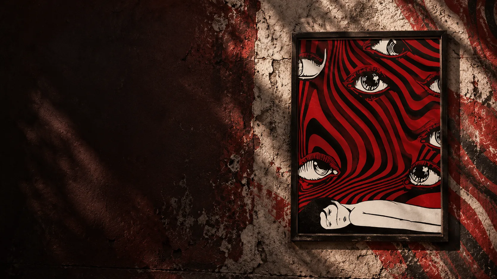
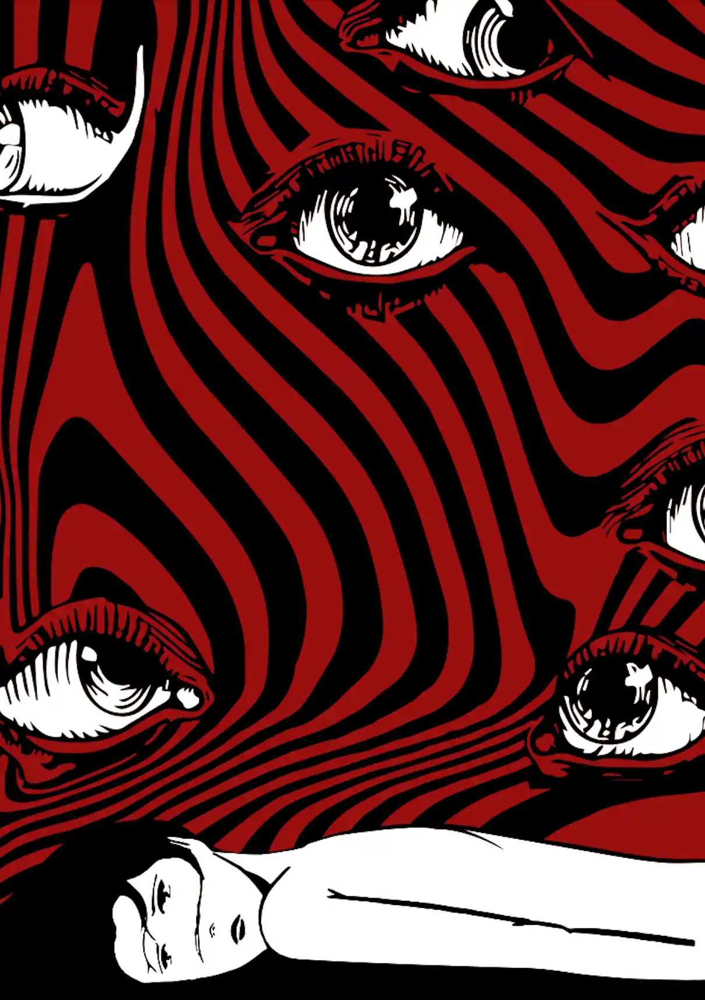
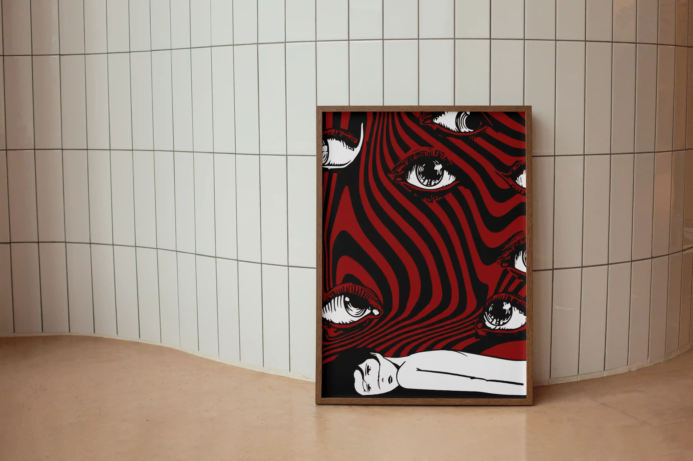

OPGAVE
Vi fik til opgave at designe en plakat ud fra en følelse. Derefter skulle vi skabe en plakat, der visuelt formidlede den valgte følelse.

2026
En plakat, der visualiserer følelsen af ensomhed gennem stærke kontraster, symbolik og et uroligt visuelt udtryk.
↓ SCROLL NEDVi fik til opgave at designe en plakat ud fra en følelse. Derefter skulle vi skabe en plakat, der visuelt formidlede den valgte følelse.
Jeg valgte at designe en plakat ud fra følelsen ensomhed. Min plakat handler om ensomhed og følelsen af at være alene, selvom man er omgivet af andre. De mange øjne symboliserer andre mennesker og samfundet, mens personen nederst ligger alene. Det viser, at man godt kan være omgivet af mennesker uden at føle sig som en del af fællesskabet.
Jeg har valgt rød, sort og hvid for at skabe en dramatisk og urolig stemning. De forvrængede linjer symboliserer de kaotiske tanker og følelser, man kan opleve, når man føler sig ensom.
Mit budskab er, at man godt kan føle sig alene, selvom man er omgivet af andre mennesker.
Adobe Illustrator
1 dag
Plakat
Det færdige resultat er en plakat, der gennem farver, symbolik og forvrængede linjer formidler følelsen af ensomhed og tanken om at være alene, selvom man er omgivet af andre mennesker.

